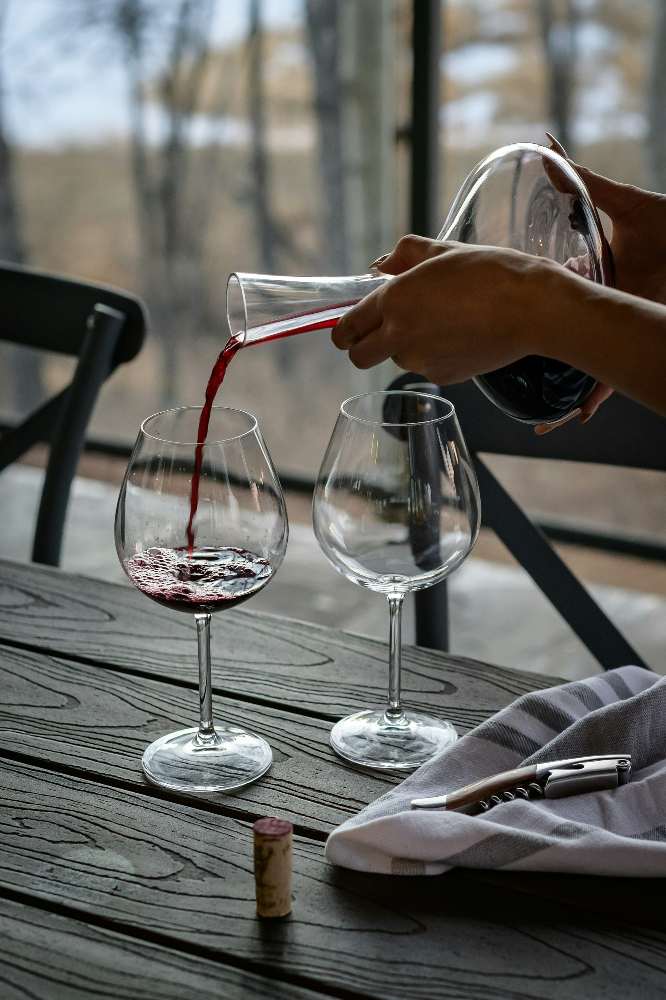

I · THE FAMILY
It started with Rosina
Rosina was our great-grandmother — the one who believed no table was full until it was crowded, and no dinner was finished before the second bottle. Her kitchen ran on tomatoes, olive oil, and opinions. When our family finally planted vines of its own, there was never any question whose name would go on the label.
Santi Rosina is a small house, run by family and friends who might as well be. We pick together, bottle together, and argue — lovingly — about blends together.
